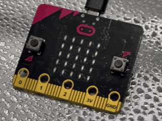
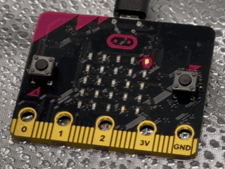
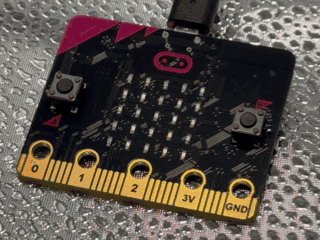
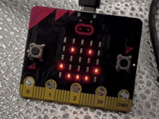
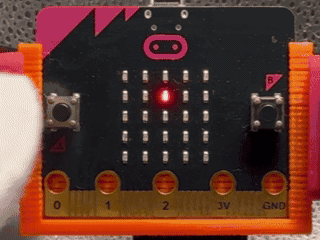

🧭コンパスでほういを調べよう（アルファベット） 🧭コンパスで方位を調べよう（アルファベット）
このプログラムでは、micro:bitのコンパスセンサーを使って、本体が向くほういをNORTH（北）・EAST（東）・SOUTH（南）・WEST（西）のアルファベット頭文字「N・E・S・W」でリアルタイムにひょうじします。 このプログラムでは、micro:bitのコンパスセンサーを使って、本体が向く方位をNORTH（北）・EAST（東）・SOUTH（南）・WEST（西）のアルファベット頭文字「N・E・S・W」でリアルタイムに表示します。
使い方
- 起動直後にキャリブレーション開始 起動直後にキャリブレーション開始
- 「TILT TO FILL SCREEN」という文字が流れたら、LEDがすべて光るように、micro:bitをかたむけて円をえがくように動かす 「TILT TO FILL SCREEN」という文字が流れたら、LEDがすべて光るように、micro:bitを傾けて円を描くように動かす
- キャリブレーションが終わったらにっこりした顔がひょうじされて、プログラムがスタート キャリブレーションが終わったらにっこりした顔が表示されて、プログラムがスタート
- ロゴがある方を上にして、本体を水平にたもつ ロゴがある方を上にして、本体を水平に保つ
- 本体の向きをかえると、ほういに合わせてN・E・S・W の文字が切りかわる 本体の向きを変えると、方位に合わせてN・E・S・W の文字が切り替わる
- AとBを同時におしてキャリブレーションをやりなおし AとBを同時に押してキャリブレーションをやり直し

ねらい
- ほういをあらわすえいごの学習 方位を表す英語の学習
- キャリブレーションの意味と地磁気（ちじき）のりかい キャリブレーションの意味と地磁気の理解
チャレンジ
- 水平のしきいち（どれだけかたむいてもOKか）をせっていしてみる 水平のしきい値（どれだけ傾いてもOKか）を設定してみる
- ほういを8方向に広げて、NEやSWなどのひょうじにチャレンジ 方位を8方向に広げて、NEやSWなどの表示にチャレンジ
🧭コンパスでほういを調べよう（カタカナ） 🧭コンパスで方位を調べよう（カタカナ）
このプログラムでは、micro:bitのコンパスセンサーを使って、本体が向くほういを「キタ↑／ニシ↑／ミナミ↑／ヒガシ↑」のカタカナでひょうじします。 このプログラムでは、micro:bitのコンパスセンサーを使って、本体が向く方位を「キタ↑／ニシ↑／ミナミ↑／ヒガシ↑」のカタカナで表示します。
使い方
- 起動直後にキャリブレーション開始 起動直後にキャリブレーション開始
- 「TILT TO FILL SCREEN」という文字が流れたら、LEDがすべて光るように、micro:bitをかたむけて円をえがくように動かす 「TILT TO FILL SCREEN」という文字が流れたら、LEDがすべて光るように、micro:bitを傾けて円を描くように動かす
- キャリブレーションが終わったらにっこりした顔がひょうじされて、プログラムがスタート キャリブレーションが終わったらにっこりした顔が表示されて、プログラムがスタート
- ロゴがある方を上にして、本体を水平にたもつ ロゴがある方を上にして、本体を水平に保つ
- ほういがNなら「キタ↑」、Wなら「ニシ↑」、Eなら「ヒガシ↑」、Sなら「ミナミ↑」を、ほういがかわらないかぎりくり返しひょうじ 方位がNなら「キタ↑」、Wなら「ニシ↑」、Eなら「ヒガシ↑」、Sなら「ミナミ↑」を、方位が変わらない限り繰り返し表示
- ほういをかえたら、ただちに新しいほういのカタカナ＋「↑」にきりかわり、うわがきひょうじ 方位を変えたら、直ちに新しい方位のカタカナ＋「↑」に切りかわり、上書き表示
- AとBを同時におしてキャリブレーションをやりなおし AとBを同時に押してキャリブレーションをやり直し

ねらい
- 日本語をひょうじするほうほうの学習 日本語を表示する方法の学習
- コンパスのちょうせいと地磁気（ちじき）のりかい コンパスの調整と地磁気の理解
チャレンジ
- 水平のしきいちやひょうじ時間をちょうせいする 水平のしきい値や表示時間を調整する
- ほういを8方向に広げて「ホクトウ↑」などのひょうじも作る 方位を8方向に広げて「ホクトウ↑」などの表示も作る
👣万歩計 👣万歩計
このプログラムでは、micro:bitの「かそくどセンサー」をいかして、歩いたときの体のゆれから歩数をカウントする「ミニ万歩計」を作ります。 このプログラムでは、micro:bitの「加速度センサー」を活かして、歩いたときの体の揺れから歩数をカウントする「ミニ万歩計」を作ります。
使い方
- micro:bitをズボンのポケットやベルトにこていする micro:bitをズボンのポケットやベルトに固定する
- 歩くと歩数が自動でカウントされる 歩くと歩数が自動でカウントされる
- Aボタンでリセット、Bボタンで歩数をひょうじ Aボタンでリセット、Bボタンで歩数を表示

ねらい
- かそくどセンサーのしくみをしらべる 加速度センサーの仕組みを調べる
- からだの動きとデータのかんけいを学ぶ 身体の動きとデータの関係を学ぶ
- けんこう・ほけん学習や体育の活動と組み合わせる 健康・保健学習や体育の活動と組み合わせる
チャレンジ
- 1日の歩数をきろくしてみよう 1日の歩数を記録してみよう
- 10歩ごとにおうえんメッセージをひょうじするなどのくふうをしてみよう 10歩ごとに応援メッセージを表示するなどの工夫をしてみよう
- 家族やクラスで歩数をくらべてみよう 家族やクラスで歩数を比べてみよう
🌡️かいてきな気温をさがしてみよう！ 🌡️快適な気温を探してみよう！
このプログラムでは、micro:bitの温度センサーを使って、気温によっていろいろな顔の絵文字をひょうじします。 このプログラムでは、micro:bitの温度センサーを使って、気温によっていろいろな顔の絵文字を表示します。
使い方
- micro:bitを手にもつ micro:bitを手に持つ
- つくえの上において、しばらくまつ 机の上に置いて、しばらく待つ
- 気温が30度をこえると、かなしい顔をひょうじ 気温が30度を超えると、悲しい顔を表示
- 20度から30度のあいだは、にっこりした顔をひょうじ 20度から30度の間は、にっこりした顔を表示
- 20度みまんでは、むすっとした顔をひょうじ 20度未満では、むすっとした顔を表示

ねらい
- 温度センサーのしくみを学ぶ 温度センサーの仕組みを学ぶ
- 気温とかんじかたのつながりのりかい 気温と感じ方のつながりの理解
チャレンジ
- ひょうじするアイコンをかえてみる 表示するアイコンを変えてみる
- 「しきいち」をちょうせいしてちがいをくらべる 「しきい値」を調整して違いを比べる
✊✌️✋じゃんけんゲーム ✊✌️✋じゃんけんゲーム
このプログラムでは、micro:bitを使って、Aボタン＝グー、Bボタン＝チョキ、A＋Bボタン＝パー でたたかうじゃんけんゲームを作ります。 このプログラムでは、micro:bitを使って、Aボタン＝グー、Bボタン＝チョキ、A＋Bボタン＝パー で戦うじゃんけんゲームを作ります。
使い方
- Aボタンでグーを出す Aボタンでグーを出す
- Bボタンでチョキを出す Bボタンでチョキを出す
- A＋Bボタンでパーを出す A＋Bボタンでパーを出す
- ボタンをおしたしゅんかんに相手の手をランダム表じ ボタンを押した瞬間に相手の手をランダム表示
- 勝ちならにっこりした顔、負けならかなしい顔、あいこなら「＝」をひょうじ 勝ちならにっこりした顔、負けなら悲しい顔、あいこなら「＝」を表示

ねらい
- 三すくみの学習 三すくみの学習
- 組み合わせとルールにもとづく考え方を学ぶ 組み合わせとルールに基づく考え方を学ぶ
- 入力と出力（勝ち・負け）のロジックを学ぶ 入力と出力（勝ち・負け）のロジックを学ぶ
チャレンジ
- 勝ち回数をカウントする 勝ち回数をカウントする
- えんしゅつをくふうしてみる 演出を工夫してみる
- つうしんで二人プレイできるようにする 通信で二人プレイできるようにする
本情報の内容 (添付文書、リンク先などを含む) は、作成日時点でのものであり、予告なく変更される場合があります。